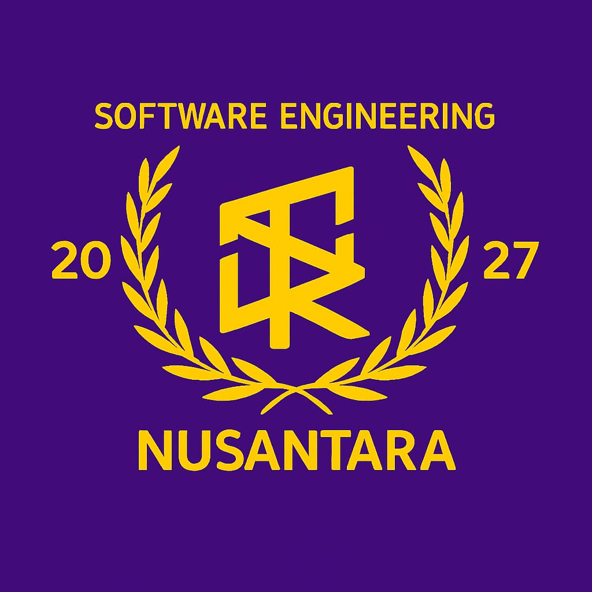
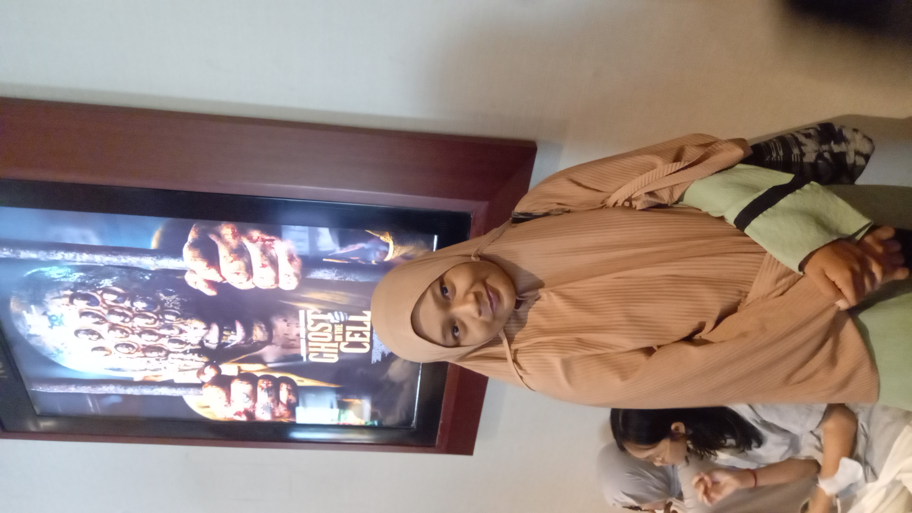

Kelas dengan penuh semangat coding, kreativitas, dan kekeluargaan.
Kenalan Yuk
PPLG adalah jurusan yang mempelajari pemrograman, pengembangan aplikasi web, mobile, hingga gim. Kami dilatih berpikir logis, kreatif, dan kolaboratif untuk membangun produk digital berkualitas.
Kelas XI PPLG adalah keluarga yang penuh ide, canda, dan ambisi. Bersama-sama kami belajar, berkarya, dan bertumbuh menjadi developer masa depan.

Beliau adalah sosok yang penyabar,baik,peduli, inspiratif, dan selalu mendukung setiap langkah siswa XI PPLG. Dengan pengalaman dan pengetahuan yang ia punya, beliau membimbing kami menjadi pribadi yang tangguh,disiplin dan berkarakter.